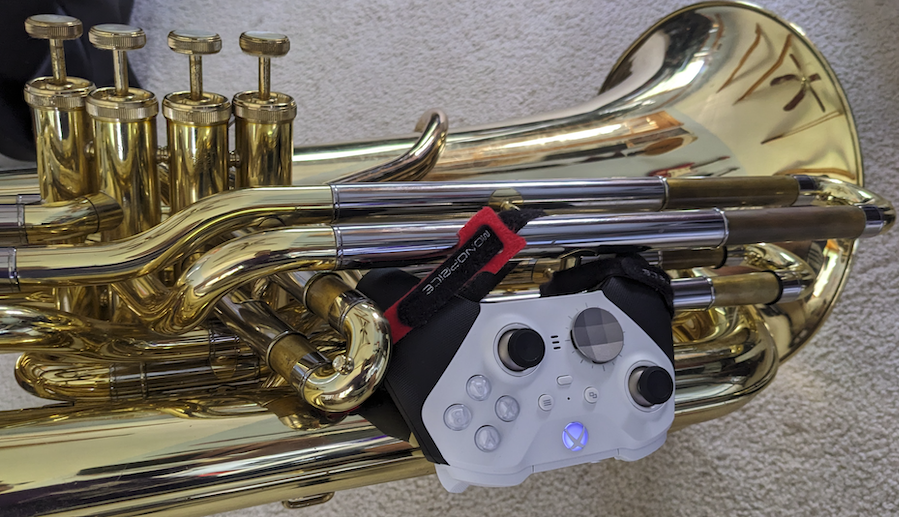

SousaFX Documentation¶
{kind=link}
Introduction¶
SousaFX is a multi-effects rig made with MaxMSP that lets tuba players control audio effects using a game controller attached to the side of the tuba.
{kind=link}
It features a number of audio effects, thoughtfully refined so that modulating their parameters with a game controller is as musical as possible. A controller bindings page allows you to remap controls and set deadzones, and to make things more fun, the bindings can also be relinquished and established on-the-fly, based on looper status, joystick positioning, and wether or not the tuba’s playing.
SousaFX can run either on its own, or alongside Ableton Live to utilize drum loops, backing tracks, networked jamming plugins, etc. A SousaPlayback template Project for Live is provided.
Five audio-rate control signal outputs let SousaFX send LFO and envelope data to VFX apps such as SousaVFX, VDMX, Resolume, Touchdesigner, etc.
SousaFX may be downloaded and evaluated for free, however a license must be purchased for continued use.
{kind=link}